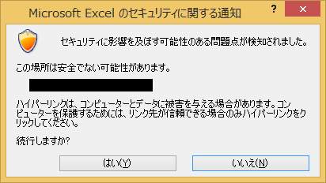
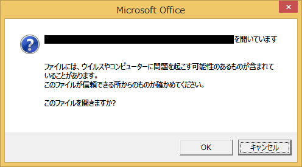

(※ 2016 年 7 月 12 日に Japan Office Support Blog に公開した情報のアーカイブです。)
こんにちは、Office サポートの 西川 (直) です。
Office ファイルにサーバ上の他のファイルやページへのハイパーリンクを挿入したとき、環境構成によって、これをクリックすると認証ダイアログが表示されたり、正常に開かないというお問い合わせを頂きます。
このような場合、ForceShellExecute というレジストリを設定することで事象が回避する可能性があります。
この記事では、この ForceShellExecute レジストリの説明を中心に、このような問題が生じたときの対処方法や考慮事項を記載します。
2017/11/11 Update
“3.レジストリ ForceShellExecuteを設定する影響について” 内の対象製品、バージョンを明記しました。
2018/8/14 Update
ForceShellExecute の説明を変更しました。
2020/8/18 Update
Fix it ツールの廃止にともない、説明を変更しました。
2020/10/29 Update
クイック実行版 Office 用のレジストリを追加しました。
目次
- レジストリ ForceShellExecute の説明と設定方法
- レジストリ ForceShellExecute が使用される場面とは？
- レジストリ ForceShellExecuteを設定する影響について
- 関連情報
1. レジストリ ForceShellExecute の説明と設定方法
レジストリ ForceShellExecute は、Office 製品で開かれたファイルに挿入されたハイパーリンクを開くときの内部動作を変更するものです。レジストリエディターより、以下のレジストリを設定して下さい。
レジストリパス :
[64 ビット版の Windows で 32 ビット版の Office をご使用の場合]
1 | HKEY_LOCAL_MACHINE\SOFTWARE\Wow6432Node\Microsoft\Office\9.0\Common\Internet |
*M365Apps 等、クイック実行版の Office をご利用されている場合、以下も設定してください
1 | HKEY_LOCAL_MACHINE\SOFTWARE\Microsoft\Office\ClickToRun\REGISTRY\MACHINE\Software\Wow6432Node\Microsoft\Office\9.0\Common\Internet |
[32ビット版の Windows で 32 ビット版の Office をご使用の場合]
または
[64 ビット版の Windows で 64 ビット版の Office をご使用の場合]
1 | HKEY_LOCAL_MACHINE\SOFTWARE\Microsoft\Office\9.0\Common\Internet |
*M365Apps 等、クイック実行版の Office をご利用されている場合、以下も設定してください。
1 | HKEY_LOCAL_MACHINE\SOFTWARE\Microsoft\Office\ClickToRun\REGISTRY\MACHINE\Software\Microsoft\Office\9.0\Common\Internet |
値の名前 :
ForceShellExecute
データの名前 :
DWORD型 (0: 指定しない(デフォルト) 、 1: 指定する)
注: レジストリパスに含まれているバージョン番号 9.0 は、全てのバージョンの Office 製品で共通となります。
また、キーが存在しない場合は手動で作成してください。
2.レジストリ ForceShellExecute が使用される場面とは？
Office はファイル内のリンクを開くとき、 OS または IE のコンポーネントを用い、そのパスを処理します。
パスを処理する過程では、リンク先のサーバーがどのようなものであり、どのような機能を提供しているかなどを確認します。
このような処理を行う目的は、対象の Web サーバーへの到達確認や、対応している機能を確認するため等が挙げられます。
しかしながら、プロキシサーバを使用している場合などの特定の条件下では、認証ダイアログが表示されたり、正常に開かないといった事象が発生する可能性があります。
この時、レジストリ ForceShellExecute を 1 に設定すると、シンプルな形でリンクを開こうとするようになり、事象が改善する可能性があります。
3.レジストリ ForceShellExecuteを設定する影響について
ForceShellExecute レジストリ設定を加えることで生じる制限事項があります。現在確認されている制限事項を以下に列挙します。
a) Office 製品よりハイパーリンクを介してファイルを開く際、シンプルな形でリンクを開こうとするようになります。
そのため、Office 製品標準の方法で開かれることを想定されているアドインを使用している場合等に、
挙動に影響を与える可能性があります。
b) Excel 2010 のブックで、別のブックへのハイパーリンクを実行時に、対象のブックが開かない現象があります。(Excel 2010 のみが対象となります)
以下のサポート技術情報に記載されている修正プログラムを適用することで解消されます。
タイトル : Excel 2010 ブックにハイパーリンクをクリックするリンクを含むブックが表示されません。(自動翻訳)
アドレス : https://support.microsoft.com/ja-jp/kb/2597992
c) PowerPoint の .ppsx (スライドショー形式ファイル) から、別の .ppsx ファイルを開くリンクをクリック時、リンク元のファイルを閉じるまでリンク先が開かれません。
これは、リンク元のファイルを .pptx (PowerPoint プレゼンテーション形式ファイル)で保存することで、回避することができます。
d) Office 製品よりファイルを起動する際、以下のような警告をうながすダイアログが表示されることがあります。

または

これは、以下のサポート技術情報に記載されている方法で非表示にすることができます。
タイトル : 2007 Office プログラムおよび Office 2010 プログラムでハイパーリンクの警告メッセージを有効または無効にする方法
アドレス : https://support.microsoft.com/ja-jp/kb/925757
なお、Office 2013、Office 2016 についても有効な方法となりますが、レジストリキーのバージョンは以下のとおり適宜読み替えてください。
Office 2013 : 15.0
Office 2016 : 16.0
e) Excel ブックへのハイパーリンクを実行しファイルを開く際、対象ブックのリンクされているシートに移動しません。
例) 以下のようにハイパーリンクを設定していても、 ファイルを開く際、リンクされているシートに移動しません。
C:\Users\Public\Documents\test.xls#Sheet2!B99
f) Word 文書へのハイパーリンクを実行しファイルを開く際、対象文書のリンクされているブックマークに移動しません。
例) 以下のようにハイパーリンクを設定していても、 ファイルを開く際、リンクされているブックマークに移動しません。
C:\Users\Public\Documents\test.docx#Bookmark
4. 関連情報
タイトル : ログオン ページやエラー ページにリダイレクトされるか、表示されたら、認証については、Office ドキュメント内の SSO の Web サイトへのハイパーリンクをクリックすると、(自動翻訳)
アドレス : https://support.microsoft.com/ja-jp/kb/899927
タイトル : [OFF2003] Office 2003 で Web サイトからドキュメントを開く方法
アドレス : https://support.microsoft.com/ja-jp/kb/838028
タイトル : WebDAV アクセスするためのコンポーネント (WebClient と MSDAIPP)
アドレス : https://technet.microsoft.com/ja-jp/windows/win7_tips64.aspx
本情報の内容 (添付、リンク先などを含む) は、作成日時点でのものであり、予告なく変更される場合があります。